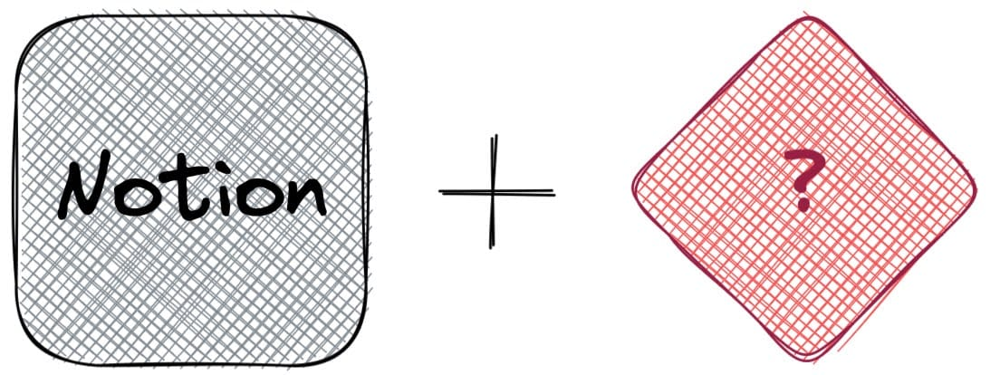
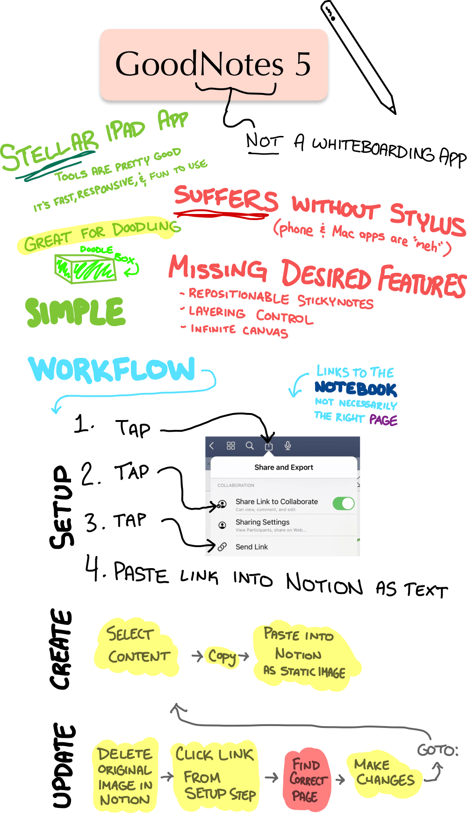
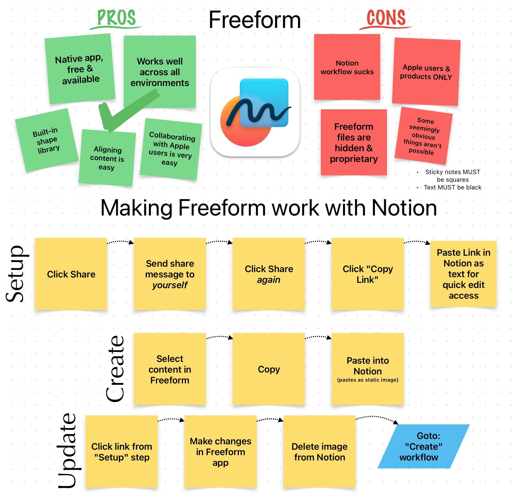
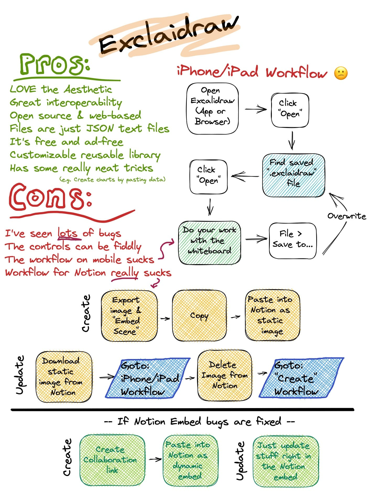
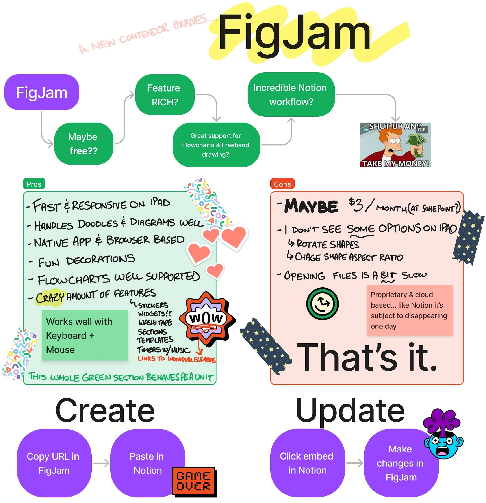
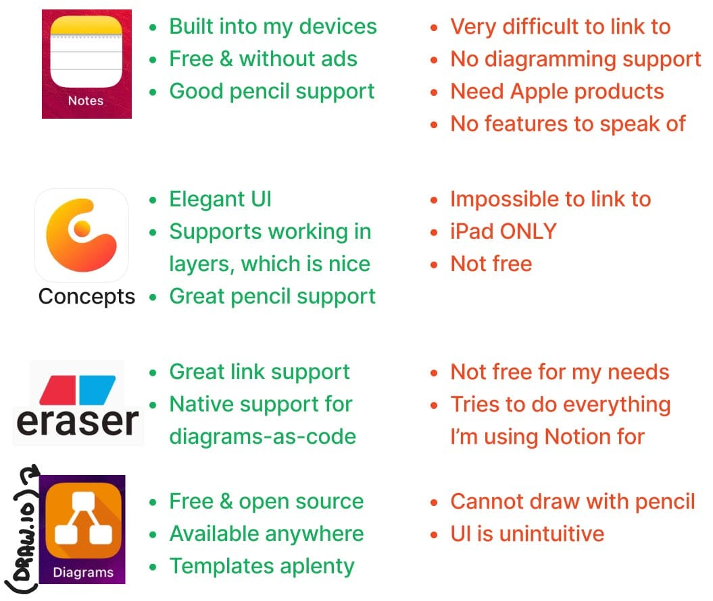
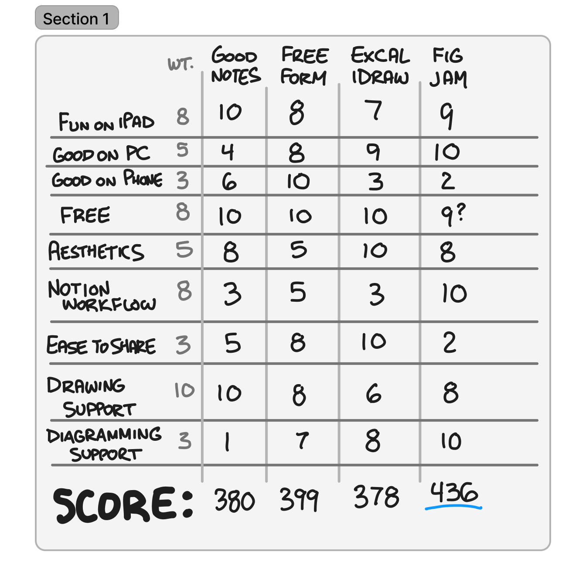

For literally years I lamented my note-taking platform anxiety, until along came Notion and more or less destroyed the competition once and for all. Now I have a new related-but-different app choice anxiety problem.
Whiteboarding Apps
Whiteboarding apps are meant to mimic a large whiteboard. They let you draw, write, attach images and sticky notes freely on a 2-dimensional canvas. They are an invaluable asset in the hands of creative-types. Whereas note-taking is the diligent recording of facts and thoughts, whiteboarding is the freeform expression and development of ideas. There isn’t a de facto standard for whiteboarding - no clear champion against which all others must be judged. Instead there are a myriad of options, each coming with their own pros and cons. Standard features typically include an infinite canvas, realtime collaboration, intelligent diagramming, and robust support for freehand drawing, but there’s large variation from app to app.
I’m looking at apps that allow for drawing, diagraming, and allowing ideas to come about naturally. Specifically looking for something that best fills the void in Notion’s highly structured, linear form; and there are a lot.

I’m going to do the work, so you don’t have to. What follows is a rundown of some of the competitors in this arena. I’m going to use them to explain their pros and cons, and illustrate their workflow with Notion to embed a drawing, open the drawing, modify it, and see the modification in Notion.
GoodNotes 5
GoodNotes 5 is the app I’ve been using for this purpose for the past few years. It’s not intended as a “whiteboarding” app, instead it mimics a digital notebook. GoodNotes was designed to be the notebook you use when you’re attending class. It’s feature set is built around making the process of note taking as seamless and intuitive as possible - the fact that it also works as a blank canvas on which to sketch out ideas is sort of a happy accident. It works pretty well for that purpose, but leaves some things to be desired in a proper “whiteboarding” application.

Freeform
Freeform is the reason this Column exists. I was happy making GoodNotes work until Apple debuted Freeform, their “official” whiteboarding app. Freeform is baked into every iPhone, iPad, and Mac as of the latest software update. It’s got an infinite canvas that allows you to work in real time with others as simply as sending them a text. It’s got some really nice things about it, but also some annoyances.

If you’ve got an Apple product, click here to see a read-only copy of that board.
Excalidraw
Excalidraw is an open source, browser-based whiteboarding app with a hand-drawn look. Excalidraw is awesome. It is the one I want to use. I love the aesthetic it creates and several other tricks it has up its sleeve. You can save Excalidraw boards as standard image files (PNG or SVG), while also baking-in the data necessary to open them back up in Excalidraw and continue working on them. Collaboration is dead simple. I can send you a link to an excalidraw and you and I can be collaborating on it in real time immediately, no sign up or sign in required. It’s this easy. Also it’s open source and saves in non-proprietary plaintext formats; which means Excalidraw files will probably remain openable forever.
So why isn’t it the automatic winner?
Well… it’s buggy… and its UX on mobile is not fun. You can install it to your device as a Progressive Web App, but you can’t associate that app with the “.excalidraw” filetype on iPad or iPhone. You have to open the app, then open the file from within in the app. More friction compared to the others on this list. Also - in theory it enjoys a native integration with Notion - in reality I find that integration is wholly unreliable and unusable.

Click this link to see an editable copy of that Excalidraw board right in your browser. Seriously click it, Excalidraw is awesome.
FigJam
FigJam is a product I was almost wholly unaware of before writing this Column. It’s from the creators of the design app “Figma”, and its designed to be very fun to use FigJam is worth the price I paid for doing this research. For a week after writing about it I was pretty sure FigJam was going to replace GoodNotes as my daily driver. For the purpose of this Column, let’s pretend it did1.
FigJam has the best Notion support (by far), the best feature set (also by far), and the best all-around user experience across desktop, iPad, and mobile.

FigJam embeds in Notion can work in two ways - a full-blown FigJam embed allows you to scroll around on the whiteboard (but not edit it) and see changes happen in real time. Alternatively, you can choose to “paste as Preview”, which gives you a snapshot of whatever you pasted in that cannot be scrolled but CAN be updated to the most recent value by clicking “refresh”. both options provide a one-click access to open FigJam to the correct spot and start editing immediately. This is easily the best workflow.
Click here to see a read-only version of that FigJam board.
Miro
Miro is a paid app and suffers for it. They want you to subscribe to do all sorts of things - while I’m happy to pay for things, these things are available elsewhere for free. Miro looks to be pretty alright if you are to “buy in” to using their ecosystem… but I’m definitely not doing that.
The UI is too cluttered & distracts from your content. Their intended use cases don’t seem aligned with my own (individual wanting a simple whiteboard to embed into Notion). While they do offer native Notion embeds, I got so frustrated trying to make it work and gave up. So there’s no example board to be seen here.
Other Apps
There are other options that I ruled out more quickly. Here’s an incomplete list:

Decision Matrix
A decision matrix (aka “Pugh Matrix” aka a couple other names) is a tool to used to rank competing options in a rigorous and (supposedly) objective way. The general idea is you come up with criteria you care about, assign each of those criteria a weighting factor, score each of your options against each criteria, then finally multiply the scores received by the weighting factor and sum up the overall score to determine the “optimal” choice. If that doesn’t make sense, don’t worry. There’s an example below.
Decision Matrix Problems
My experience with decision matrices is that they aren’t objective. They are just subjective in a slightly more rigorous way. They have many potential points of failure.
Your decision matrix might suck if:
- You fail to include all criteria you care about, or include unnecessary criteria that dilute what is actually important
- You and your collaborators don’t agree on criteria, or criteria weighting
- You don’t have an objective scoring system for each criteria & rely on opinions
- An option on the table solves your problem in a way that just so happens to not line up with your criteria
Defending the Decision Matrix
So if a decision matrix is prone to failing in numerous ways, does that mean it’s useless? No. They can be helpful.
First, there are a number of mitigations you could put in place to make the scoring systems less subjective. You could use the wisdom of the crowds, or perhaps your situation lends itself to obvious criteria and objective metrics against which you can score each option without requiring judgment.
Even if none of that works, just by putting in the work to think about and talk about what’s important will probably give you the information you need in order to know what you want to win. Sometimes that’s all you need.
A Whiteboarding Decision Matrix

Options along the top, criteria along the side. Each criteria holds a weight factor, each option is ranked against each other option. The “best” option in each row gets the 10. The others are ranked relative to it. The score at the bottom of each column is the sum of the numbers in the column after they are multiplied by their corresponding weight factor. So, GoodNotes is a 10 in the “Fun on iPad” criteria, which has a weighting of “8”. So 8 x 10 = 80 points. Continue down each row and you end up with 380 points for GoodNotes. The other columns are scored in the same way.
Notes:
- All of those scores are subjective. Herein lies the myth that decision matrices are “objective”.
- GoodNotes means the app “GoodNotes 5”, which isn’t free… but is a one time expense that I’ve already paid, so continuing to use it for me is effectively free.
Conclusion
I’m going to use FigJam2. I already made that choice before doing the decision matrix, and the decision matrix reinforced that choice.
I am also going to keep Excalidraw in mind when I’m looking for something with a particular aesthetic - or if I’m wanting to actually do collaborative whiteboarding with someone remotely. I adore their “no sign-in required, no install necessary” operating model, and the results end up looking very pleasing. I’m also probably going to use Excalidraw for any drawings or doodles I’d want to keep for posterity - say as part of my body of Notes. I love that the project is open-source and the files are simple JSON text files. I think a local install of Excalidraw is pretty future-proof. And if Excalidraw fixes a few bugs and get their Notion embed worked out - I might switch to it full time for everything.
Top 5: Best Notion Companion Apps for Drawing & Diagramming
5. Miro
Any number of options could have been #5.
4. Excalidraw
Will be higher when/if they fix the Notion workflow.
3. GoodNotes 5
Assuming you already bought it… otherwise it’s at #4.
2. Freeform
Assuming you have Apple stuff… otherwise it’s not really an option.
1. FigJam
The clear winner.
Quote:
Whoa, this is awesome. Several people to whom I’ve demoed Excalidraw